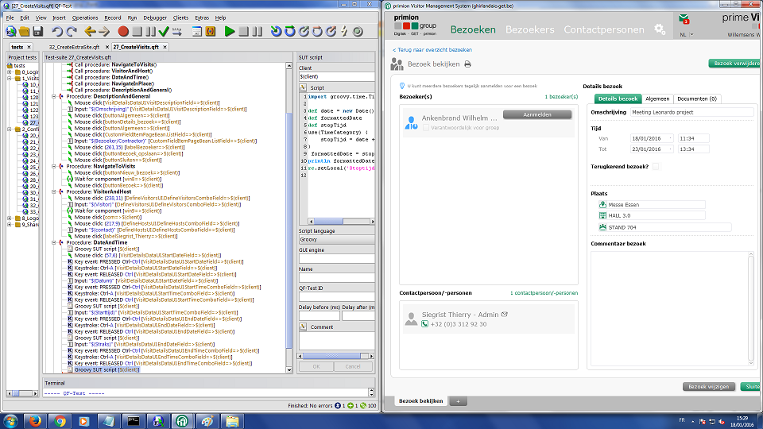

QF-Test case study
Ik ga de tool QF-Test bespreken, dit is ook wat ik en wout hebben gebruikt tijdens onze 2 weken stage. Het is een tool om testen te programmeren voor je applicaties. Het werd gebruikt door de afdeling Software Development. Get N.V. ontwikkelt een webapplicatie genaamd Prime Visit die ertoe dient de aanwezigheid en planning van het personeel in te organiseren. Hiervoor schrijven ze testen die dan snachts blijven draaien om alle foutjes op te sporen.
Hoe maak je een test met QF-Test:
De tool herkend automatisch objecten in je applicatie zoals knoppen of labels, je laat dan zien aan de tool wat er moet gebeuren met die objecten (bv; je klikt door tot het instellingen scherm). Ook kan je gebruik maken van scriptjes in de programmeertalen groovy of jython om invoer mee te creëren voor tekstvakken.

(Dit is een screenshot met links de QF-Test tool waar meerderen procedures openstaan met acties die rechts op de webapplicatie Prime Visit worden uitgevoerd)
Info:
De tool is gemaakt door een bedrijf genaamd QFS (www.qfs.de) en is ook vooral bedoeld voor andere bedrijven en niet meteen voor particulieren. Dit kan je zien aan de iets wat duurdere prijs namelijk €1 995,00. Ze hebben deze tool dan ook niet gekozen voor de prijs maar voor de betrouwbaarheid en de om dat het compatibel is met het platform waarop hun web-applicatie draait (captain casa). QF-Test ondersteunt ook veel meer platformen hieronder een opsomming hiervan:
Java Swing, JavaFX, AWT, SWT, Eclipse, RCP, Applets, Java Web Start, ULC, CaptainCasa. Web: Internet Explorer, Firefox, Chrome (HTML 5, AJAX, GWT, GXT / ExtGWT, ExtJS, ICEfaces, jQuery UI, jQuery EasyUI, PrimeFaces, Qooxdoo, RAP, RichFaces, Vaadin, ZK).
Wat wij met de tool hebben gedaan:
Tijdens de 2 weken stage hebben ik en wout testen geschreven voor Prime Visit waaronder tests om in te loggen, groepen aanmaken, leveranciers aanmaken, leveranciers aanmelden, etc. Het werk dat wij hiermee hebben verricht is ook echt van nut voor het bedrijf want ze laten de geautomatiseerde tests schrijven door tijdelijk werkkrachten zoals jobstudenten en ook stagiairs. Zo kunnen hun vaste informatici zich blijven focussen op de web-applicatie en moeten het development team niet ongesplitst worden om tests te schrijven.